Inside the Walker Funeral Home
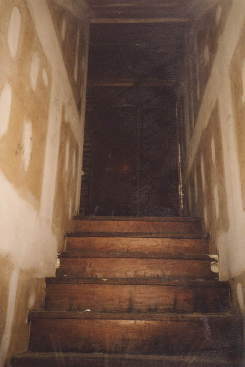
The first part of the building we saw was the basement, which was dark but not particularly scary. There was a big two-tank sink, as well as a bunch of rusty stretchers stacked in a corner.
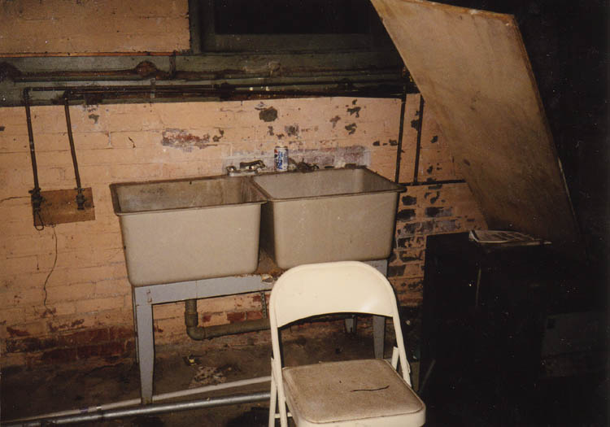
Continuing upstairs, we found a place that looked more like an available rental property than an abandoned building. The carpet was new and the windows were intact. In spite of the fact that we'd come through an open door, we were nervous, and heard an intermittent blip that we eventually traced to a smoke detector with a low battery. Apparently the place hadn't been closed down long.
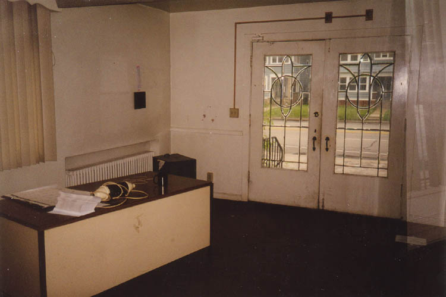
The front rooms were divided by sliding glass doors and curtains, and contained fake fireplaces, floor vases, and other things that made it look like it could have been a funeral home. Of course it could have been a real estate office, too.
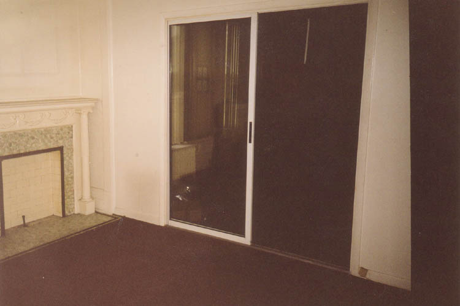
Aside from this, the only indication that the place had ever been a funeral home was a bunch of black cases we found in a first floor closet. There were purple velvet casket covers, a crucifix, and the glass bottles you see below. What these were used for I don't even want to know. Okay, actually I do. I'm currently accepting guesses.
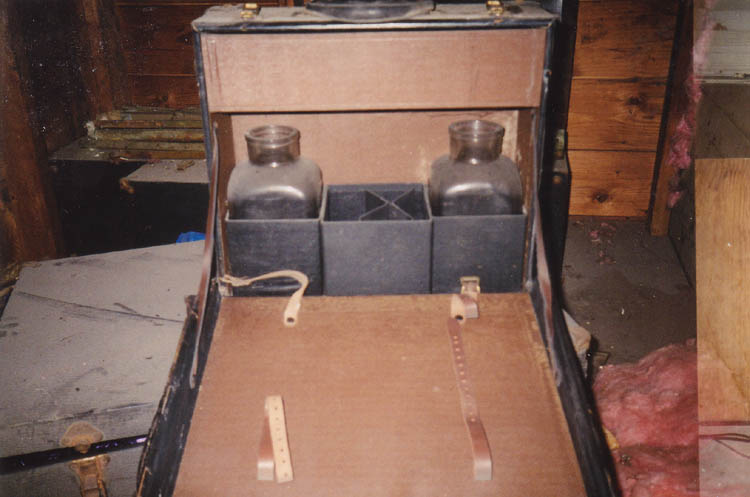
The second floor was much more ambulance company than funeral parlor. Apparently the paramedics who worked here got their orders from the upstairs office via a dispatch window.
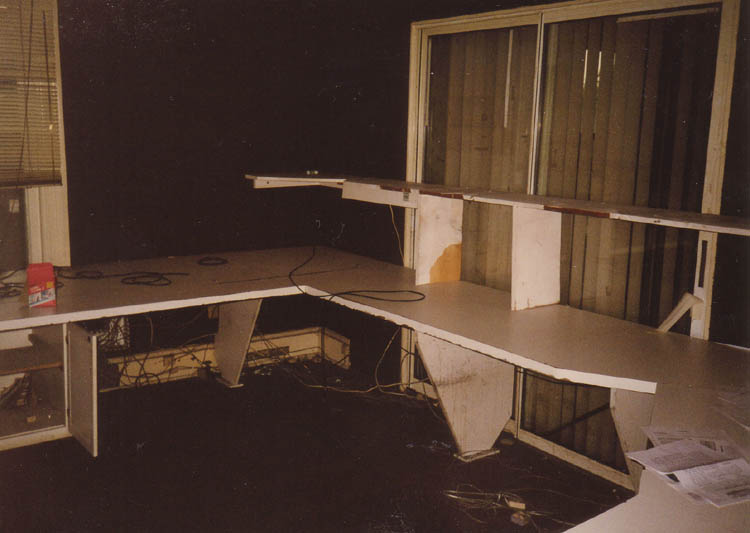
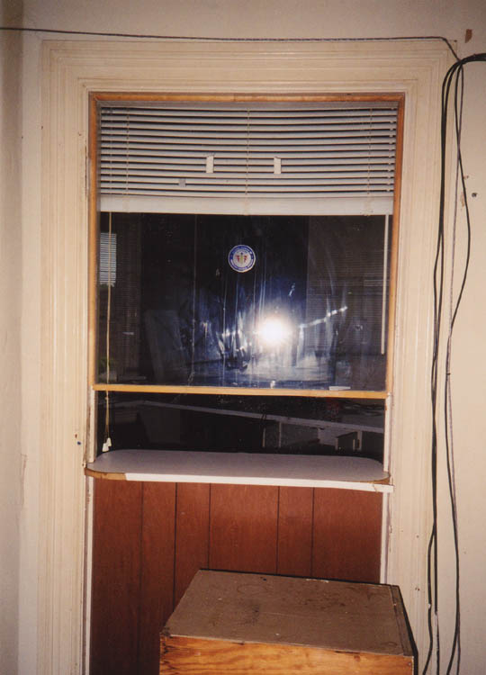
The funeral home was full of stuff when we were there, and not all of it was pretty. The first floor in the second building was the most impressive; there was a big pool table there with cues, a rack, chalk, and every ball. As I've stated, it was extremely easy to get inside this place, and the neighborhood at Bancroft and Central is not the nicest in the world. So it's pretty amazing that so little had been stolen.
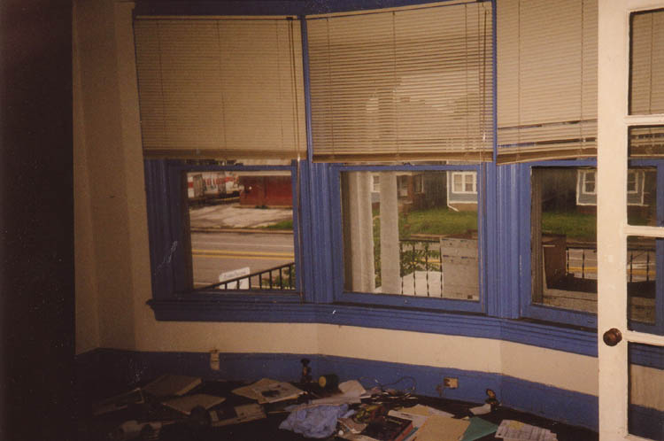
But the building was also full of medicine and medical waste. No raw human organs or anything, but plenty of first aid medicine. Some of the stuff had been used and was in big red BIOHAZARD bags; some of it was fresh and unopened. Paramedics are only allowed to dispense certain drugs, and there were samples of just about all of them here: one-use epinephrine and dopamine syringes, syrum of ipecac in bottles, sterile water "for wound irrigation." There was also a bag of something called TraumaSorb, which is, according to a paramedic I happen to know, used to soak up blood around a serious wound. Fun stuff.
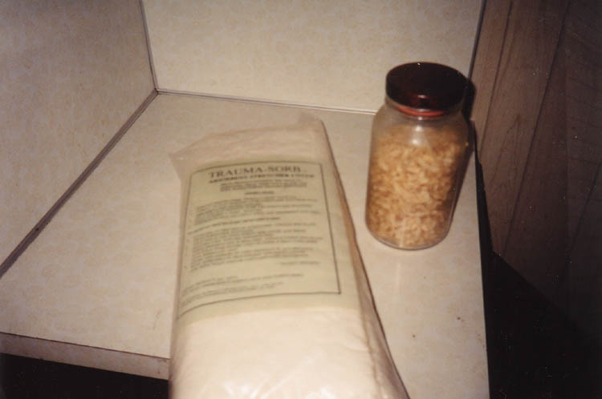
A fairly normal-looking kitchen on the second floor had some moldy food in the cabinets, and in a brown paper bag on the counter.
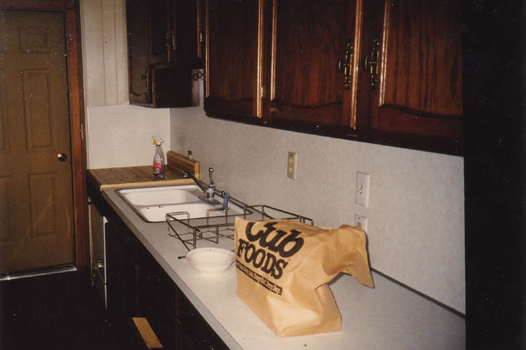
All throughout the building were files, datebooks, and boxes of paperwork pertaining to the services the ambulance company provided. They billed people to take them to the hospital in an emergency, and they billed high. I looked through the records and saw a lot of car accidents and coronary thrombosis. Somehow it doesn't seem right that people should profit from this sort of thing, acquiring customers who need treatment and have no option but to owe money to a private company like this. I wonder if the fire department charges.
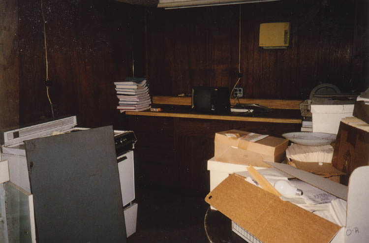
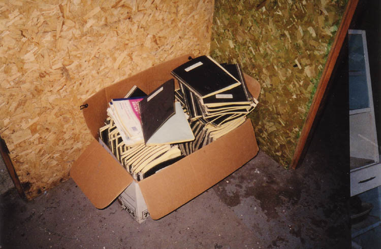
I visited the former Walker Funeral Home twice on consecutive days. One of those times we didn't leave until after dark. Although it was weird being in an "abandoned" building that was in such good condition, we never heard or saw anything out of the ordinary. I wonder if the current tenants have.
Back